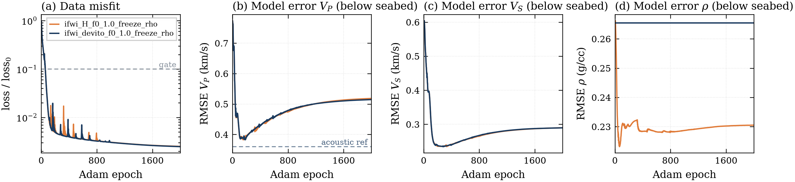
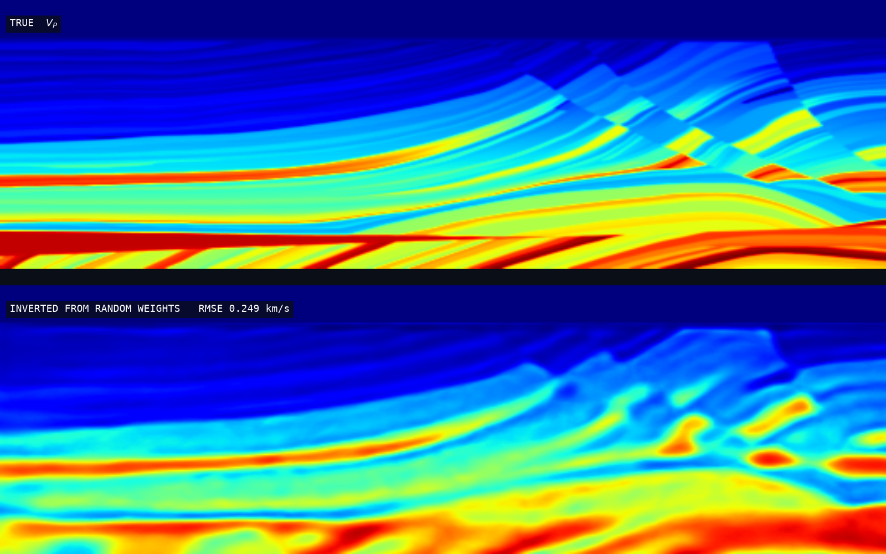
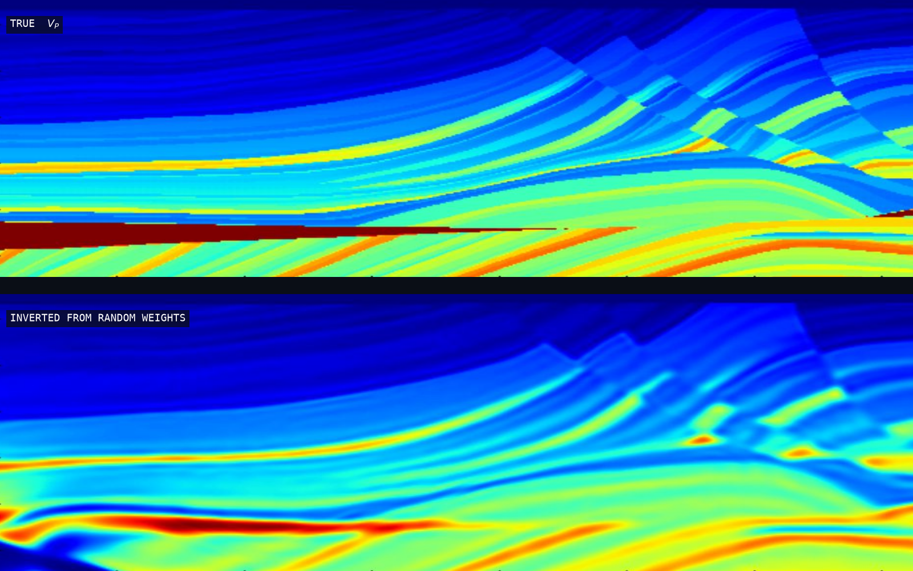
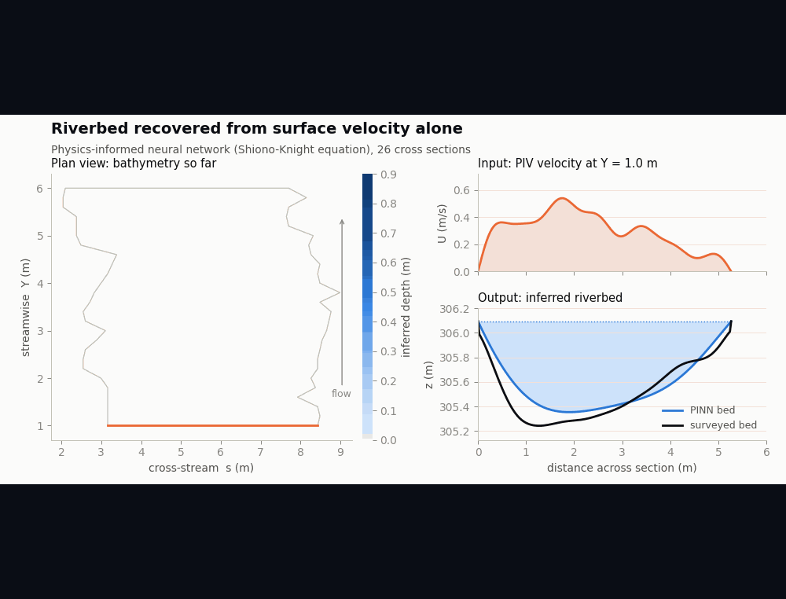

Anh Le inverse problems
I recover fields nobody can measure, from the traces they leave on things you can — a seismogram at the surface for a velocity model kilometres down.

Two independently written gradients, one answerAbout
the inverse directionMy work is the inverse direction of physics: a governing equation says what a known medium would do; I ask what medium produced what was observed.
They are ill-posed: sparse observations, many media that fit them about equally well. The work is choosing what extra information closes the gap, and saying what stays undetermined.
Throughout, the unknown is a coordinate network rather than a grid of values and the gradient comes from the physics itself — an adjoint solve, or autodiff where the solver permits — never a surrogate.
Interests
- PDE-constrained optimisation
- Adjoint-state methods
- Automatic differentiation
- Implicit neural representations
- Full-waveform inversion
- Regularisation & ill-posedness
Tools
How I set these problems up
one recipe · three PDEsDifferent physics, different gradients, deliberately identical scaffolding — so comparing them means something.
The field is x → m(x): a small coordinate network whose weights are the unknowns. Grid-scale noise is not representable, so it regularises itself.
Production stencil codes cannot be differentiated by an ML framework, so I wrap them in a typed differentiable boundary and supply the gradient by hand.
An adjoint-state solve, or autodiff where the solver is JAX. Where both exist I run both and check they agree.
Random initialisation, no hand-built starting model — the case that tests the inversion rather than the guess.
Work
same method · different equationThree inverse problems, one recipe, three governing equations.

SoloElastic full-waveform inversion
Three coupled parameters, from a random start.
A coordinate network maps position to vp, vs, rho; Devito solves the elastic wave equation with a hand-written adjoint. From a random start on Marmousi2, continuation 1.0 → 1.5 → 2.5 Hz with gradient clipping cuts P-wave error to a quarter of the start's and S-wave error to a fifth. A pure-JAX autodiff solver swaps in behind the same interface and agrees to 0.9 %.

Team of twoAcoustic full-waveform inversion
The predecessor: two differentiable components, composed.
A JAX network and a Devito wave solver with incompatible dependency stacks, differentiated end to end across the boundary: autodiff on one side, an adjoint-state solve on the other, checked against finite differences. Built with Nhat Tran for the Tesseract Hackathon 2026.
Results & figures →
In preparationPDE coefficient inversion
How little extra information closes an ill-posed problem.
The unknown is a coefficient field in a depth-averaged momentum balance; the observable is the free surface above it. Physics fixes the shape, one integral constraint the scale, and one or two point measurements the rest — a handful of measurements instead of a dense survey.
Repository →